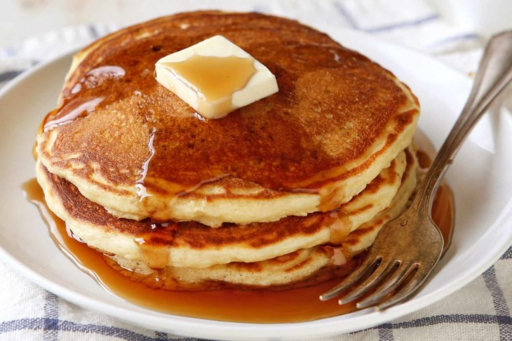
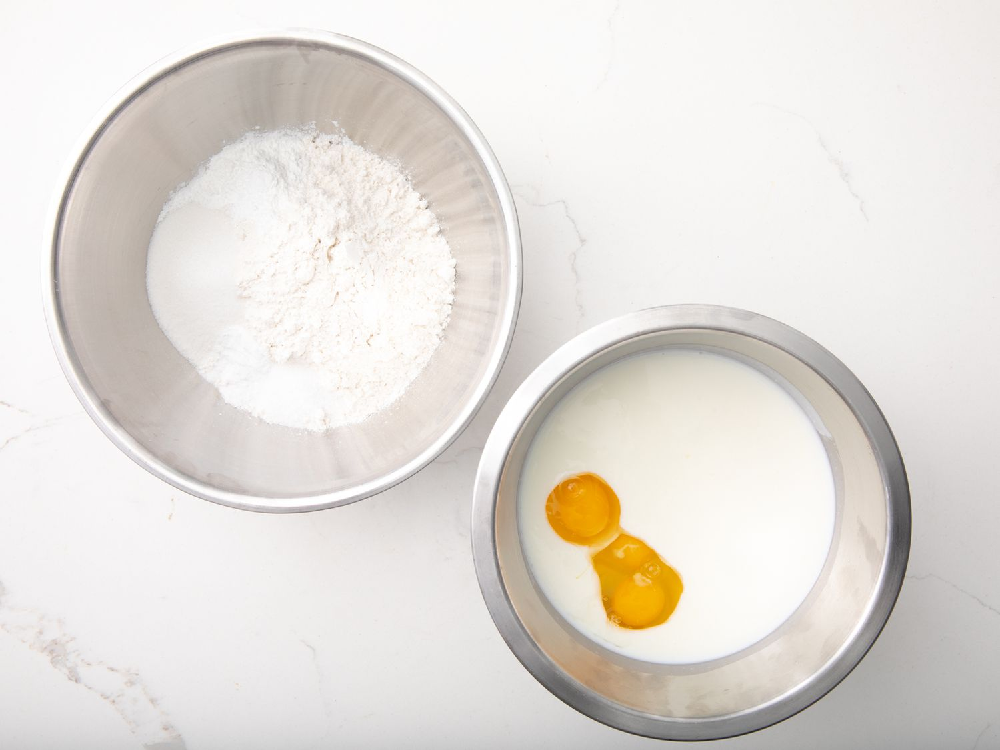
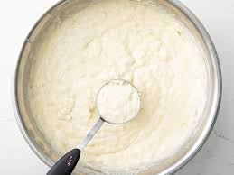
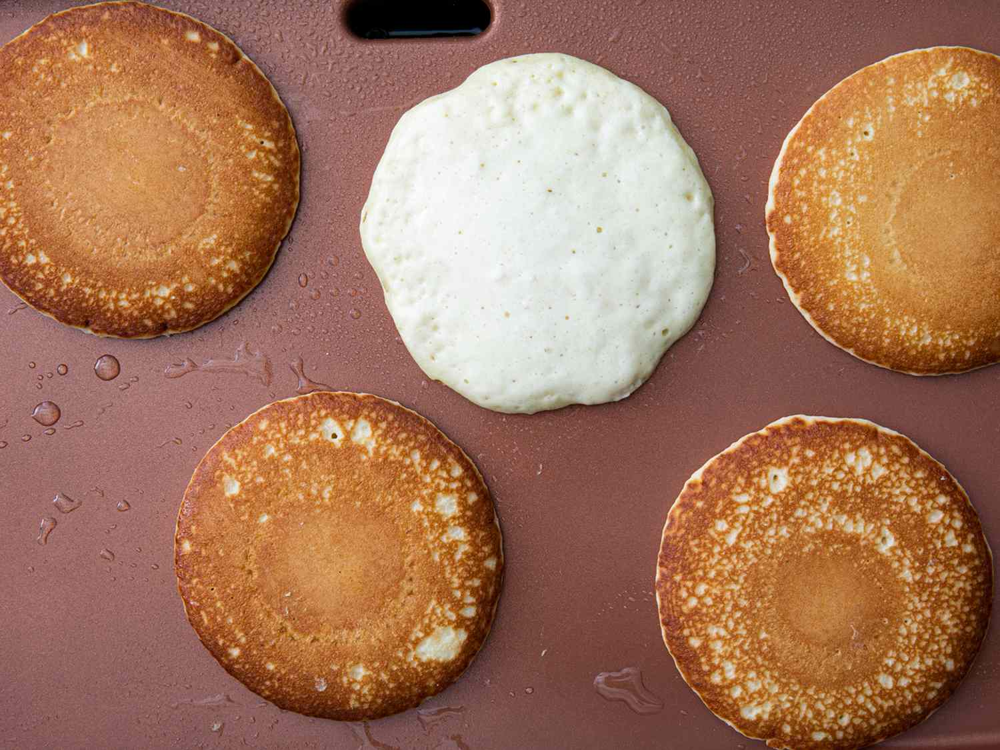
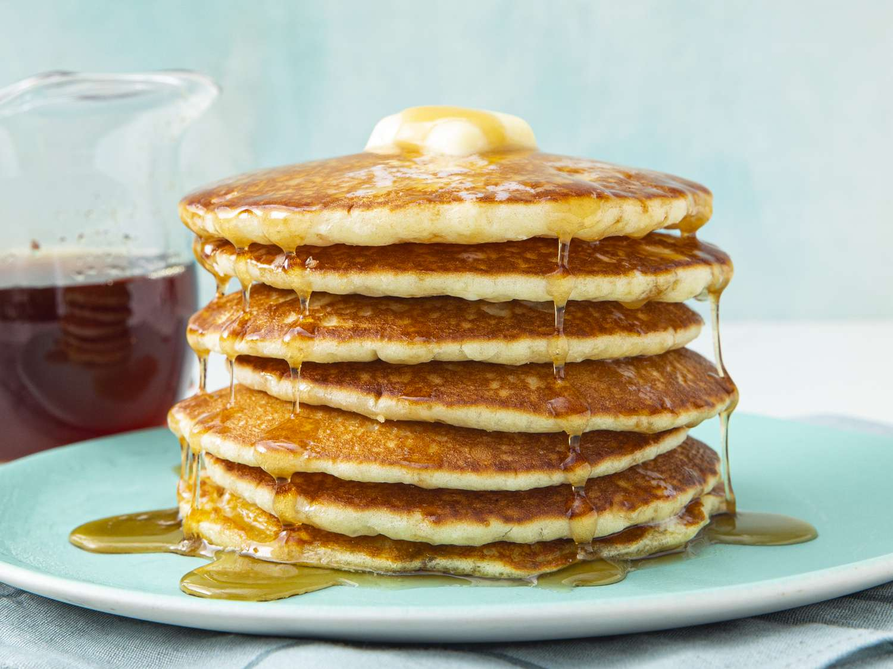

Buttermilk Pancakes Recipe

Description
A very light and fluffy pancake recipe that requires fresh buttermilk, but it's the best I've ever made!
As convenient as a store-bought mix can be, every home cook needs a good buttermilk pancake recipe in their repertoire. Don't have a tried-and-true favorite yet? You're in luck!
Ingredients
You probably already have everything required to make this top-rated buttermilk pancake recipe. Here's what you'll need:
- Flour:All-purpose flour contains gluten, which gives the buttermilk pancakes structure and pleasant chewiness.
- Sugar:Just three tablespoons of white sugar should be enough to lend subtle sweetness. Remember, you'll be adding a lot more sugar if you top the pancakes with syrup or molasses!
- Leaveners:Baking powder and baking soda act as leaveners (a substance that releases gas when mixed with other ingredients, causing the batter to rise to fluffy perfection).
- Salt:You definitely don't want to skip adding a small amount of salt — the buttermilk pancakes will taste bland without it.
- Buttermilk:Of course, you'll need buttermilk for buttermilk pancakes! This recipe calls for three whole cups.
- Milk:Wholemilk helps create the perfect batter consistency and cuts some of the buttermilk's acidity.
- Eggs:Three whole eggs add structure and rich flavor to the buttermilk pancakes.
- Butter:Melted butter lends flavor and keeps the pancakes nice and moist.
Steps
- Combine flour, sugar, baking powder, baking soda, and salt in a large bowl. Beat buttermilk, milk, eggs, and melted butter together in a separate bowl. Keep the two mixtures separate until you are ready to cook.

- Heat a lightly oiled griddle or frying pan over medium-high heat. You can flick water across the surface and if it beads up and sizzles, it's ready.
- Pour the wet mixture into the dry mixture; use a wooden spoon or fork to mix until it's just blended together. The batter will be a little lumpy which is what you want.

- Pour or scoop batter onto the preheated griddle, using approximately 1/2 cup for each pancake. Cook until bubbles appear on the surface, 1 to 2 minutes; flip with a spatula and cook until browned on the other side. Repeat with remaining batter.

- Serve hot and enjoy!

Home